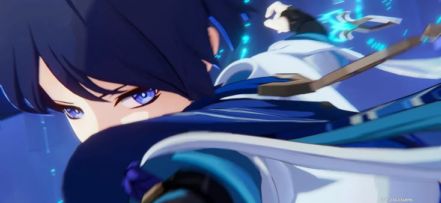
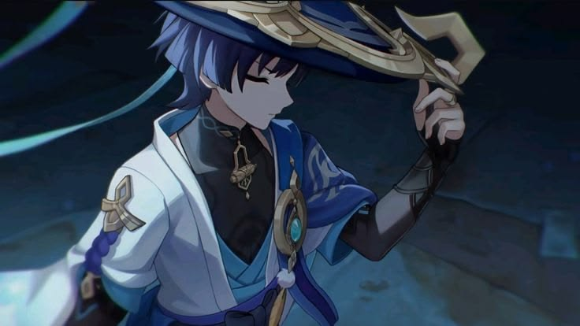
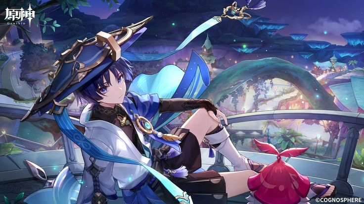
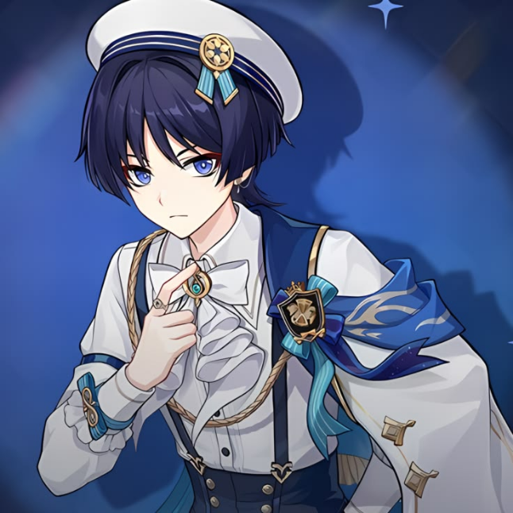
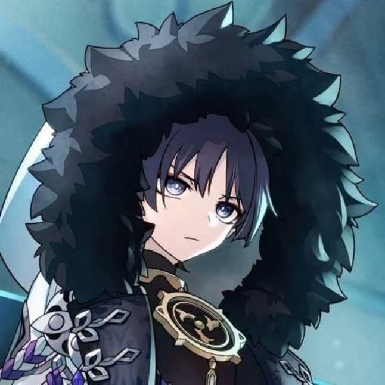
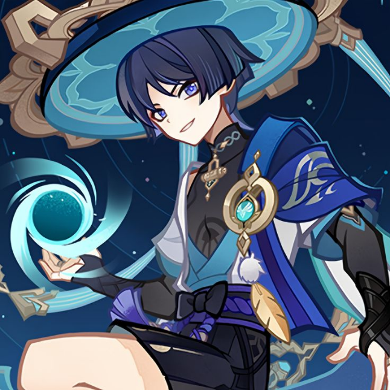
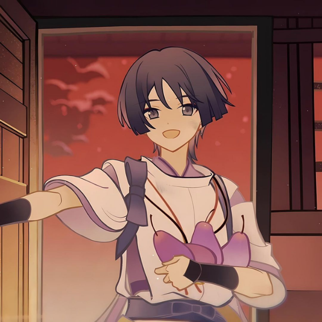

WANDERER



Wanderer es un personaje de Genshin Impact. Anteriormente conocido como Scaramouche, fue creado como un prototipo de marioneta por la Arconte Electro, Ei. Tras un largo viaje lleno de conflictos y cambios, decide abandonar su antigua identidad para comenzar una nueva vida bajo el nombre de Wanderer.
Es un personaje de cinco estrellas que utiliza el elemento Anemo y un catalizador como arma. Destaca por su movilidad aérea y su estilo de combate rápido.

Arma
Catalizador.
Elemento
Anemo.
Rol
DPS principal.
Habilidad Elemental
Permite levitar y atacar desde el aire con mayor movilidad.
Habilidad Definitiva
Lanza una poderosa ráfaga de viento que inflige daño Anemo en un área.
Estilo de juego
Especialista en combate aéreo, ataques rápidos y alta movilidad, ideal para jugadores que prefieren un estilo de juego ágil y ofensivo.
HISTORIA
Wanderer, antes conocido como Scaramouche y el Balladeer, es un personaje cuya historia gira en torno a la búsqueda de identidad y propósito. Fue creado por la Arconte Electro, Ei, como un prototipo para albergar la Gnosis Electro. Sin embargo, al demostrar emociones y sensibilidad, Ei decidió sellar su poder y dejarlo vivir libremente en lugar de convertirlo en un arma. Despertó sin comprender su existencia y, tras sufrir varias traiciones y pérdidas, desarrolló una profunda desconfianza hacia la humanidad.
Tras los acontecimientos de Inazuma y Sumeru, intentó convertirse en un dios utilizando la Gnosis Electro, pero fue derrotado con la ayuda del Viajero y de Nahida.




